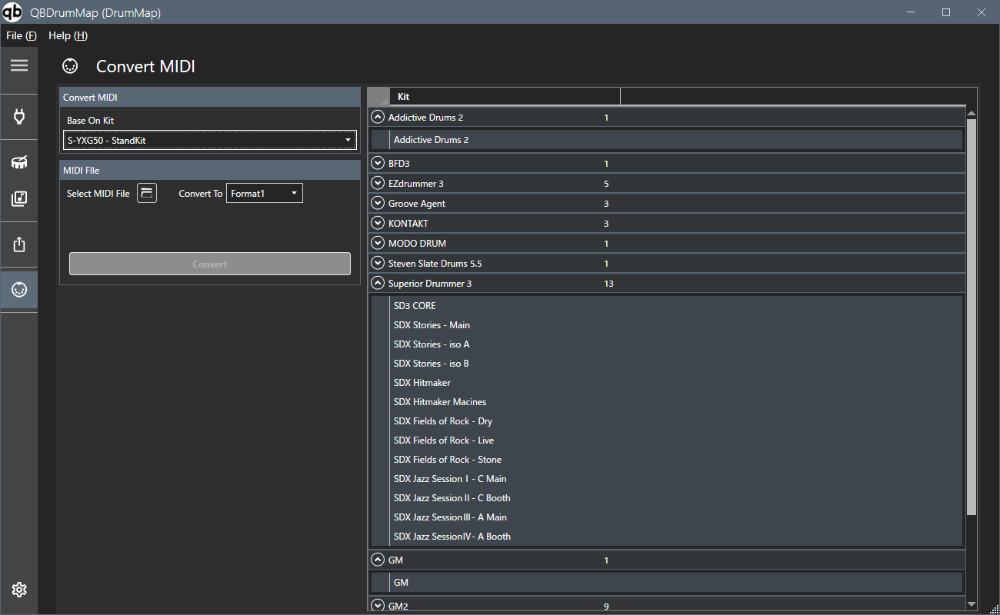

Convierte datos MIDI (SMF).

Seleccione el kit base desde el que realizar la conversión. Importe el archivo a convertir usando el botón en el lado derecho de
Target Midi File.
Alternativamente, puede importar un archivo MIDI arrastrándolo y soltándolo en la página. (ver 1.0.1 o posterior)
Seleccione el objetivo de conversión de la lista de kits en el lado derecho de la pantalla (son posibles varias selecciones) y presione el botón de conversión.
La conversión se realiza en función de la configuración de articulación del mapa de batería.
Los tonos para los que no se especifica ninguna articulación se generarán como datos separados con un '#' añadido al principio del nombre del archivo original.
Por ejemplo, si la fuente de conversión son datos que también incluyen percusión del mapa GM, la parte de batería y la parte de percusión se separarán.
El archivo de salida convertido se creará en la misma carpeta que el archivo original.
Si el formato de salida es Format0, se creará una carpeta con el nombre del archivo original + _converted, y se creará un archivo en ella con el nombre del drum map convertido.
Si el formato de salida es Format1, se creará un archivo con el nombre del archivo original + _convertido, y se creará una pista dentro de él con el nombre del mapa de batería convertido.
Si está utilizando Cubase, es mejor utilizar el formato 0 ya que no puede manejar pistas individuales en un archivo MIDI.